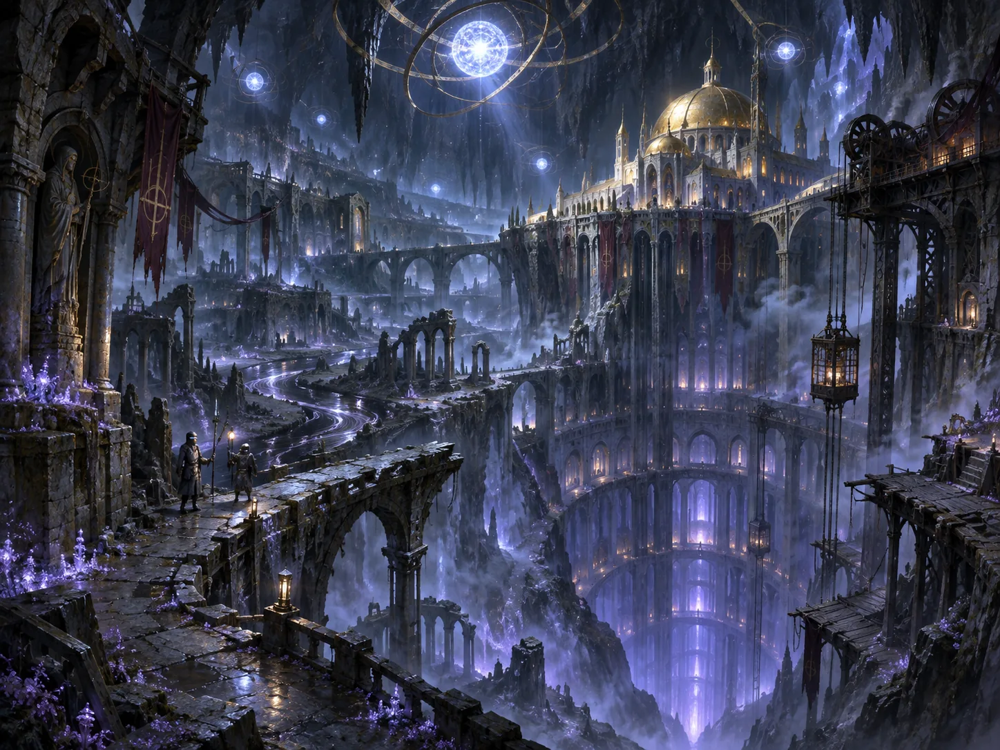

V3.7 原文档案 · 按原稿顺序完整收录 · 未删节
V3.7 原文档案 · 按原稿顺序完整收录 · 未删节
二、驻地
希芙拉
希芙拉并非废星本身。矿井最深的升降梯穿过一道无法绘入地质剖面的界面，抵达废星地表之下的地底亚空间投影。最后一块标明矿层年代的刻牌留在井口；再往下，测绘员只能用桥梁、断柱与水位给自己的地图定向。
洞穴不见边缘。穹顶闪烁着无数暗淡的伪星，冷蓝色的光落在断桥上。最古老的观测簿把它们记作卡利班毁灭时散落的灵能碎片；后来的测绘员仍照着这份簿册誊写。
〔初抵希芙拉的测绘残图〕
“上方有星。脚下有河。桥在我们走到以前已经断了。”
图中七颗伪星被圈起。第二日的观测纸上，它们换了位置。
修道院的承重柱与旧堡垒地基压在深渊之井上方。最早的守望者把这座建筑称作井盖，后来才有了金穹与石廊。从升降井末端通往军事环区的是坡道与桥；旧渠人取水的河岸则在桥基之下。井沿的旧钢梁曾被拉成极细的弧线。值夜者在钢梁上系过十三根短绳；黎明时只剩十二根。
567.M34，加勒隆将扩张的裂口暂时压回旧刻度。此后守望者每年仍要更换变形的撑梁。修道院逐渐沉降，最深的石柱却始终未卸下负荷。
〔无铭阶墙〕
下层的石阶比上层更少磨损。第一次拆柱后，三根测针同时折断。此后，施工记录在这一页中断。
〔旧渠封井名簿〕
一口看似洁净的取水井被旧渠人封住了。名簿上只记取水者、修封者和几户迁走的姓氏。有人在空白处添写：会把人身上的颜色借走。
567.M34后，入口在帝国航图上消失。数十年后，一艘返航舰在远东星域的废星上重新找到了矿井。舷窗外的星座没有一颗对得上。
〔第一环区沉降簿·075.M42之后〕
战后第一个测期，废墟的沉降已较战前快了近四成。记录员写下增幅，又把同一条测线标在下一页；新刻度还未填满，石壁已裂出第二条缝。守夜轮次未减。
黑河穿过断柱与桥基。大多数河段仍沿石槽流淌，旧渠人循着水声修桥、下网、安置取水口。从废星浅层下来的升降井穿过不可测绘的界面，抵达希芙拉的断桥和黑河。矿道住户把木料、菌房残料与少量粮秣运下井道；旧渠船只则在希芙拉的河道往来。唯有靠近井口的几段支流偶尔逆坡；投入上游的金属标记曾从另一条支渠漂回，表面多出一道无人刻下的划痕。
〔北渠采水簿〕
“暖缝上的石衣又红了。三日后见虾，七日后见细鱼。桥墩下若有背鱼，就不许孩子下水。”
含盐的暖水从岩缝渗出，石面蒙上一层锈色薄膜。断桥下的灰毯攀着排水带来的废木、菌房残料生长；支流干了，菌毯也随之枯下去。高处滴水的岩檐住着檐翼兽，熄灯以后掠过桥洞捕虫；旧渠孩子第二天常在菌架上捡到细碎的虫翅。
环区、属民与地底的生活
〔灾后环区图〕
第一环区：破损。第二、第三环区：仍有守军。第八环区：静滞地库。
旧地图上的第六环区，已无人能够指认。
金穹与石廊隔着一道旧伤员坡道。金穹上方的闸门仍能落下；坡道下方有两条被封死的输水支渠。
〔旧渠家族·熄灯之夜〕
警戒光无声地闪过十三次。母亲把孩子抱进通风井。骨白色的骑士从桥上经过，盔甲底部拖着一条未干的血迹。
旧渠人的族谱不记领主，记水闸与修堤的人。河床退去时露出的器皿，年代有时比桥还早。家谱旁常夹着网场、菌房和弃用水口的清单；一座桥断了，两岸的亲戚可能数十年见不上面。
〔旧渠摇篮歌，残存三句〕
颜色是借来的。
灰要还给活着的人。
那一种颜色，不要叫它进门。
〔失色季·两份相互矛盾的口述〕
“光是从天上落下的。”
“不是。那天我看见井水自己亮了。”
菌床曾异常丰茂，随后连根粉化。下游先是捞不到石须虾，接着细鱼也不见了。守渠人封了取水网；封井的人没有留下姓名。
〔桥头旧禁令〕
色异而丰，封床。无源发亮，封井。失色之人，先带回家。
〔旧渠争议·两份记录〕
军方写下：隔离迟延。
旧渠家族在同页背面写：他们终于学会不碰那口井。
封井口的灰墙上仍有老人画下的几道短线。
旧渠人的葬礼在封闭菌床旁举行。灰烬归土之前，药剂师要查看封条。一名矿工拒绝交出父亲的骨灰；奥瑞克把他的请求留在了石廊。
废星浅层矿户在封闭菌床里培育可食菌种；野生灰毯留在希芙拉的河岸，不进粮仓。旧渠的网常设在缓流处：石须虾藏于石缝，灯针鱼随虾群而来，桥背鱼伏在深槽下。退水时，船便往深处移。遇到岸潜兽占住取水阶，居民改走另一座桥；若菌床断水，整家人只好背着菌种、滤网和祖先的骨灰迁走。外来补给偶尔抵达，总先被分去修阀和治病。
每到征募季，矿道村落会收到没有署名的盐袋。被选中孩子的家门前，总比别处多一袋。金穹的碎金和石廊的白灰，常由同一户旧渠工匠修补。
567.M34之后，北渠的水再没回来。干槽里只剩虾壳；下游多了几户失去网场的人家，北渠旧姓却仍有人在枯阀旁点灯。
075.M42后，第一环区成了废墟。静滞舱被搬进属民矿道。孩子们第一次看见骨白色骑士躺在担架上。
金穹与石廊
〔金穹壁面铭文〕
“凡归来者，先报未归者之名。”
帝皇的像立于入口，狮王的剑徽在五重拱穹下方。矿民把骨白色的骑士叫作“守灰者”；骑士从不在礼拜时回应这个称呼。
五段旧军用拱穹覆着暗金、深蓝与烟绿的马赛克。一段拱面从567.M34裂开，金线止于断口。最古老的嵌件里夹着烧蚀的甲片。
〔五穹残图〕
- 《承令》：出征门旁，密钥、军旗、舰影。中央无面孔。
- 《裂变》：金线断在旧裂缝处。
- 《闭闸》：两道不同的闸门，两支不曾会合的小队。
- 《归藏》：记录板、笔记、静滞舱；铭框空着。
- 《未归》：未嵌完的人形，露出灰色底层。
中央穹心空白。三次补绘提案，三次未获通过。
遗嘱圣匣在金穹尽端。金属屏障上的誓词有数行被后来的嵌片截断。院长继任时，屏障开启；平日只有锁闭声从里面传出。
灰白石碑沿旧伤员坡道排开。多数碑上只有编号；几处空龛放着断甲、录音芯片与没有送出的家书。碑面不刻真名。
石廊的湿壁画从伤员坡道延伸到矿道撤离的场景。侧龛里，一位母亲坐在征募桌前，伸出的手停在半空。
〔第一环区侧龛题记〕
第三次信标熄灭后，守军仍停留四分钟。
画上的闸门已经关闭。门外的人没有脸。
《核验》
观星者托着断甲；一盏灯照在裂口上。第三人的手悬在半空。画师没有画出裂缝里的光。
《不饮之井》
孩子伸手向水桶。母亲按住他的腕。骑士手中的取样器尚未入水。画面最亮的是母亲的手。
先过金穹，再下石廊。旗官宣读归来人数，告解者读未归名单。新骑士从《未归》下经过，没有人告诉他最后一幅该如何完成。
075.M42后，一名矿民母亲要求把儿子应征前的名字刻进石碑。议会拒绝。奥瑞克把她写下的名字收在碑后，没有让人刮掉。
核心舰船：余烬号
涂装暗灰近黑，舰首仍保留第一军团的飞翼剑徽。舰体上叠着不同时期的修复痕迹：卡利班合金板、希芙拉矿砂熔铸的钢板、远征中回收的帝国残骸。舰载武器为光矛和等离子宏炮。余烬号不驻扎在希芙拉。它长期停泊在废星高轨道暗面，引擎保持冷运行。
辅助舰船
辅助舰多由远征中回收的残骸拼接而成。舱段接缝处还能看见不同年代的舰船纹章。
盲星号：
变途者遗弃的一艘轻型掠袭舰改装。舰桥被奸奇术士的灵能污染过，部分舱室至今仍有幻觉残留。其导航记录仪中留下了一条不完整的航迹，终点不在任何星图之上，但其方向与厄声裂隙的指向完全一致。
悔泣者号：
舰桥控制台上刻着一句被故意中断的话“那支舰队”。
残舰航志
〔余烬号·航海日志〕
“出港航线三份。归航时销毁两份。第三份由死者带回。”
此句旁有三道不同笔迹的删除线。
军械库里，一套动力甲肩部的编号比其余甲片更古老。
盲星号仍有舱室传出不存在的船员呼号。悔泣者号常在卸完伤员后才熄灭引擎。